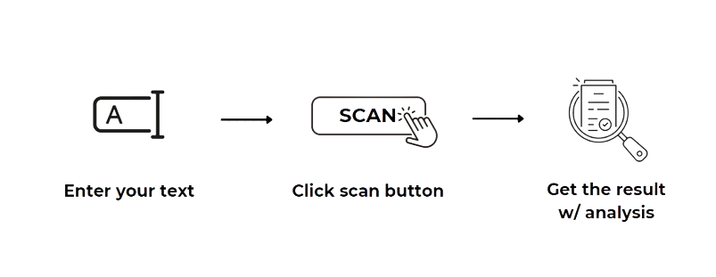

A simple and user-friendly tool to check whether your text is an AI-generated text or a human-written.
Just 3 steps is needed.

0/1000
|
80% AI-generated text |
|
Highlighted Text:
Yellow - Likely AI-generated text |